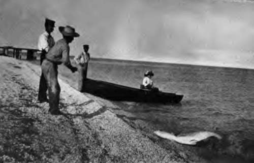
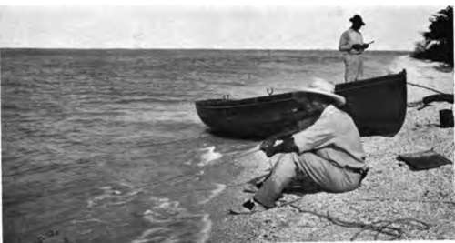

Tarpon And Other Big Fishes Of Florida. Part 2
Description
This section is from the book "Fishing", by Horace G. Hutchinson. Also available from Amazon: Fishing.
Tarpon And Other Big Fishes Of Florida. Part 2
May is the best month for tarpon fishing, although good sport may be obtained earlier if the weather is warm enough. In June the rainy season sets in, and it becomes hot, while the fish, being heavy with spawn, play sluggishly and show poor sport. The novice is nearly certain to be recommended to try the old original style of still fishing, but he will be well advised to turn a deaf ear to such persuasion; it is dull dreary work, usually resulting in the hooking of many sharks and few tarpon. Tarpon run to over 200 lbs., but a 160-lb. fish is a good one, and worthy of the taxidermist's attention if a trophy is desired. That very useful artist, the taxidermist, is migratory in Florida, and usually to be found in a tent somewhere along the shore not far from the fishing quarters, in the month of April.
Let us take a bird's-eye view of a typical day's fishing at Captiva during the third week in May, in a season when the tarpon have shown a preference for this pass, as all seasons are not alike in this respect, owing probably to the shifting of the sand-banks at the mouth of the pass.
There are many boats on to-day containing both men and women, for women have taken up this class of fishing with a surprising eagerness, and considering the great tax it must be upon their strength, are wonderfully successful in landing tar pon. Fishing has hardly commenced when some one gets a strike; up goes 150 lbs. of shining silvery fish, six feet into the air. With a vicious shake of the head, away flies the hook and down plunges the tarpon into his natural element. The whole pass seems alive with them as they show their gleaming sides or green backs while sporting in small schools. First one boat and then another gets a strike, but all the fish shake themselves free with a few vigorous jumps. See, there is a man who, having a heavy strike, is holding his fish with such force that it is a marvel his rod can stand the strain; the line suddenly slacks, and a dull thud is heard when the tarpon breaks water alongside the boat. He has lost him ; but what is amiss ? The guide is pulling for the shore with all his might, while the fisherman is throwing water from the boat in a frantic manner. The boat seems to be sinking fast, and doubtless the terrified occupants have un comfortable visions of hungry sharks snatching big bites of human flesh. The fact is that that tarpon was so scared at being held, that in his haste to jump he failed to see the boat and rammed his hard nose clean through her. It is a new boat too, the pride of its guide, but there is now a round hole, seven inches in diameter, in the bottom, and the two disconsolate occupants stand gazing gloomily as she rests upon the sandy shore, knowing that for them the day's sport is ended. The others continue fish ing as if nothing unusual had happened, for tarpon often jump into boats when hooked, and a hundred pounds or so of slippery fish charging you in the centre of the body is no rarity.
There is a man who has at last firmly hooked his fish; how magnificently it plays, dashing off with eighty yards of line, suddenly it makes a great jump and comes straight back for the boat. " Pull like mad!" cries the fisherman to his guide, as he finds it impossible to reel in quick enough. Up comes the tarpon ahead of the boat, but there is no shaking that hook out, and in about twenty minutes a 140-lb. fish lies stranded and kicking among the shells, while the lucky fisher wipes his more than moist brow.
Every one seems to be getting strikes, but only occasionally is a fish landed. There goes a man in the distance who for upwards of an hour has been steadily moving out to sea; he is fast in a 300-lb. jew-fish; we may expect to see him back in another hour or more, towing what resembles a great barrel.
Puff goes a loggerhead turtle as he rises close to a boat to take a breath of fresh air, and then subsides with a gurgle. These often get foul of a hook and are no child's play to land. " This ain't no sprat," cries an excited American lady as she lies back in her chair, hauling at some unseen monster.
There goes another man out to sea, at a fairly good pace too; he has a shark on, and if it is a large one it will occupy all his leisure time for the remainder of the day unless he cuts his line. About a score of tarpon have been beached and the ladies seem to be quite as successful as the men.
Besides tarpon many other varieties of fish are being caught, the most sporting of which is the handsome kingfish, a mighty mackerel of 40 lbs. weight.
If a tarpon could put into his first few rushes a force equivalent to that of the kingfish, it is more than doubtful whether any man or line could hold him. What mighty leaps those kingfish take before being hooked as they dash after the beautiful little skipjacks, which they fling high into the air, shooting up twenty feet themselves in sheer sport.
But what is this coming down the centre of the pass raising a mound of water with fifteen feet of small breakers in front of it ? It is one of the giant rays, a huge bird-like fish, with great wing-shaped fins 20 feet across, and a slim whip-like tail 6 feet in length. Surely few stranger fish than this exist, with a mouth large enough to swallow two men at once; and great fans on either side of it to conduct the tiny things upon which it feeds to their last resting-place. But oh for a harpoon! Has no one such a thing ? Yes, there is a man hastily reeling in his line; quickly he makes all snug and takes up his position in the bow of the boat where his long rope lies neatly coiled all ready for such an emergency.
A couple of minutes suffice to connect the harpoon and shaft, and now the ever-keen guide is racing with all his might to catch up with the ray, which, although flapping his huge wings drowsily, is really progressing at a considerable pace. Soon they are pressing him closely, and the man standing erect in the bows with harpoon poised makes a vigorous lunge. The harpoon flies through the air, there is a mighty commotion as the huge fish rears up and descends; with the rattle of a cable the rope whirls over the gunwale and the man eagerly grasps it in his hand, but although protected by the thickest of leather hedging gloves, the leather is burned through in a second, and the man plunges both hands into the sea for moisture. Then after a second trial the speeding rope is gradually checked, until the boat tears through the water, while waves break over the bow as the monster, having turned, makes through the pass for the open sea. Most of the other fishers at last display some interest in another's difficulties, all those anywhere near reeling up in undisguised haste while endeavouring to clear the way. Away they go, those two men in a boat with the devil in harness, bound for no one knows where ; the last heard of them is a shout to send the steamer, and gradually they become but a speck on the horizon.
4.- Landing A Tarpon
5.- Fishing For Shark-florida
Continue to:
- prev: Chapter II. Tarpon And Other Big Fishes Of Florida
- Table of Contents
- next: Tarpon And Other Big Fishes Of Florida. Part 3